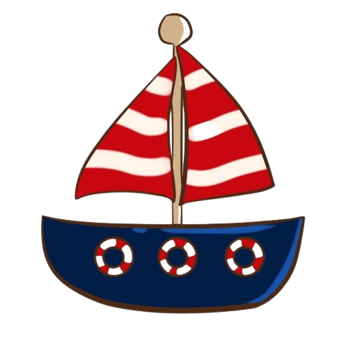

Realmente, vocês tinham razão! É um barco...Nemo e Dori, como sempre, aventureiros, querem chegar mais perto para ver o que é!
Você diz que é melhor todos se afastarem...Pode ser algo perigoso...
No final, os dois te pedem para escolher!
(1)Vou junto...
(2)Irei apenas ficar observando de longe!